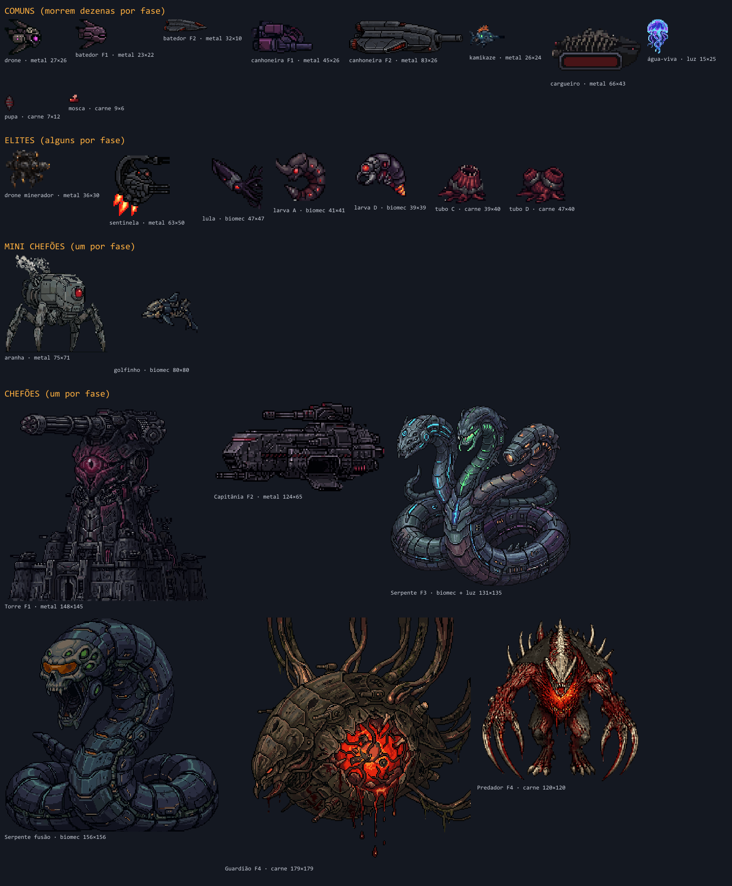
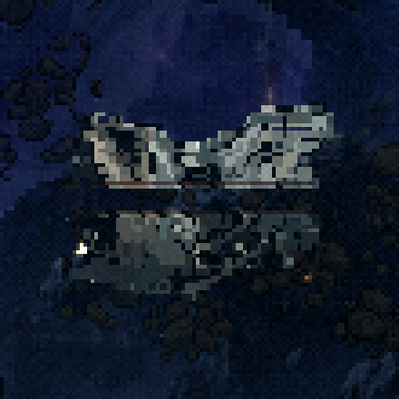

Os destroços dos inimigos
26–27/10/2026 · ← a morte da nave · A separação dos inimigos e as variações de dano, explosão e derrota, no jogo de verdade. Nada foi commitado.
27/10, o que você decidiu, e o que entrou no jogo:
- As variações ("Vou com a sua recomendação: A1 e A3 misto, B1, C1, D1"): A1 nos comuns pequenos e A3 na canhoneira e no cargueiro; B1, C1 e D1. A recomendação incluía levar os destroços aos chefões que tinham ficado de fora (seção 10).
- As marcas dos golpes (seção 11). Você viu no sandbox que o pedaço grande não acompanha o corpo que se mexe, e propôs: o tiro tira 1 px, a explosão 3 e a bomba 4, e os pedaços grandes só no fim, como as patas da aranha caindo antes de ela morrer.
- A assinatura da nave do jogador (seção 12). A Terminus morria igual a um kamikaze. Cada nave mantém a sua morte, e por cima entram a sobrecarga antes, o anel de choque e os cacos estourando em cadeia.
- 27/10, 2ª rodada: a marca na borda (seção 13). A mancha no Guardião, a Torre sem marca e a Serpente marcando o toco tinham causa. Agora cada tiro come o primeiro pixel da borda na linha dele, a fagulha acende ali, e os estilhaços no ar caem direto.
- 27/10, etapa 2: as peças destrutíveis (seção 14). O cinturão da F2 e os destroços de nave levam as marcas; o destroço segue indestrutível; o asteroide quebra como rocha (a sua escolha: o grande esfarela, o pequeno se parte).
- 27/10, etapa 3: a bala passa pela brecha (seção 15). E a Serpente da fusão não deixa mais marcas vermelhas fixas nos pedaços.
As seções 3 a 7 são a comparação de ontem e ficam como registro. Os limiares delas mudaram com as marcas.
Você: "Já faça uma separação dos inimigos, elites, mini boss e boss do jogo para aplicarmos efeitos de dano, explosões, derrotas decentes iguais ao das naves."
A técnica é a da nave (docs/DESTROCOS.md): o inimigo se desfaz nos próprios pixels, desenhados pixel a pixel na resolução do jogo. Ela agora roda num motor só para a fase inteira, porque um drone morre dezenas de vezes por fase e uma carta de reação em cadeia mata uma fila inteira no mesmo quadro.
Cada filme é o jogo de verdade, a 30 quadros por segundo. O mesmo inimigo, no mesmo lugar e com a mesma sorte em cada coluna: só a variação muda. A coluna hoje é a morte de antes, para comparar. Nos filmes de comparação os inimigos ficam parados (o voo deles foi congelado), para a morte ser vista; o filme como no jogo, logo abaixo, mostra eles voando.
1. A separação
A classe decide quanto a morte pode durar: quem morre muito tem que morrer rápido e sem tapar a tela. O material decide as cores.
| Classe | Quem | Quantos | A morte pode |
|---|---|---|---|
| Comum | drone, batedor, canhoneira, kamikaze, cargueiro, água-viva, pupa, mosca | dezenas por fase | 0,5 a 1 s, sem parar o jogo |
| Elite | drone minerador, sentinela (F2) · lula (F3) · larva, tubo (F4) | alguns por fase | 1 a 1,5 s, com peso |
| Mini chefão | aranha (F3) · golfinho (F4) | um por fase | 2 s, com câmera lenta |
| Chefão | Torre (F1) · Capitânia (F2) · Serpente (F3) · Guardião e Predador (F4) | um por fase | o momento da fase |
| Material | Quem | Como se desfaz |
|---|---|---|
| Metal | as naves das facções, a aranha, a Capitânia, a Torre | queima nas cores da explosão do PixelLab: o corte em brasa, a bola de fogo embaixo, fumaça, faíscas |
| Luz | a água-viva (e os pescoços néon da Serpente) | se apaga na cor dela: cada pixel vira brasa azul-violeta, com a descarga elétrica no lugar do fogo |
| Carne | o tubo, a pupa, a mosca (e o Guardião e o Predador) | rasga em pedaços com a borda vermelha molhada e um jorro de gotas; sem fogo e sem branco (rampa nova, tirada do vermelho do tubo e da larva) |
| Biomecânico | a lula, a larva (e o golfinho) | a carne com placas: o corte vermelho, as gotas, e uma bola de fogo pequena |

2. Como fica no jogo
3. Os comuns: três variações
- A1 · Lascas (recomendo): três a seis pedaços do próprio inimigo saem girando de uma bola de fogo menor que a de hoje, com o corte em brasa por um instante. Some em 0,5 a 0,7 s.
- A2 · Ao meio: o tiro parte o inimigo em dois por uma linha torta. As metades se separam girando em sentidos opostos, com o corte aceso e fumaçando.
- A3 · Carcaça: o inimigo perde o controle, carboniza e capota fumaçando por meio segundo, e só então estoura em pedaços. É a mais dramática e a mais lenta.
Uma ideia para decidir: misturar. A1 nos pequenos que morrem em quantidade (drone, batedor, kamikaze) e A3 nos grandes, mais raros (canhoneira e cargueiro). A carcaça do cargueiro capotando antes de estourar foi o melhor momento dos filmes de comuns.
4. As lascas por vida (o dano)
Na nave, a medida era o golpe e não as vidas, porque as vidas mudam com as cartas e o 1-UP. Nos inimigos é o contrário: a vida de cada tipo é fixa, então a medida é a barra de vida. Cada limiar cruzado arranca um pedaço, e o pedaço sai do lado de onde veio o tiro.
| Classe | Limiares de vida | Cada mordida |
|---|---|---|
| Comum | 50% (vida até 3) · 60 e 30% (até 10) · 75, 50 e 25% | 10% do corpo (6 a 30 px) |
| Elite | 75, 50 e 25% | 8% (10 a 50 px) |
| Mini chefão | 80, 60, 40 e 20% | 5% (14 a 90 px); na aranha, a mordida mira as patas |
| Chefão | 85, 70, 55, 40, 25 e 12% | 3% (40 a 240 px) |
- O buraco é de verdade: o inimigo passa a mostrar o próprio quadro com os pixels mordidos transparentes, e o fundo aparece pelo buraco. A animação, o piscar do dano e a tinta continuam. Na primeira rodada o buraco era pintado de escuro e lia como mancha.
- A mordida fica até ele morrer, e o aro dela diz o material: no metal, brasas que continuam piscando (ele ainda queima); na carne, a ferida vermelha aberta; na luz, a própria cor acesa.
- A ferida solta fumaça e faíscas no metal, gotas na carne e brasas na luz.
- Na morte, o que já foi arrancado não volta: os pedaços saem do corpo mordido.
5. Os elites: duas variações
- B1 · Ruptura (recomendo): dois estalos pelo corpo enquanto ele capota, e então ele se parte em partes grandes, com lascas voando do corte. É a morte da X-Aelo, em tamanho de elite.
- B2 · Estilhaços: o corpo fica branco por um instante e estoura de uma vez. O jogo congela 45 ms (o "peso" do acerto). Na carne e no biomecânico não há clarão: eles rebentam com um jorro maior.
6. O mini chefão: a aranha
- C1 · Ruptura com câmera lenta (recomendo): os estalos, a quebra com a teia de corte acesa, e a câmera lenta da morte da nave no momento da quebra.
- C2 · Carcaça com câmera lenta: ela carboniza, capota fumaçando e estoura.
7. O chefão: a Capitânia (o exemplo)
D1: cada limiar arranca um pedaço grande do casco do lado da nave, com estouro, e a ferida fica queimando. Na morte, a cadeia de explosões vira cinco mordidas com estouro. Depois a nave se parte nos próprios pedaços, com a explosão grande atrás deles e a câmera lenta.
Escolhi a Capitânia porque ela ainda morre do jeito antigo. A Torre (F1), o Guardião e o Predador (F4) já têm mortes aprovadas por você, e eu não mexi nelas. A Serpente e o golfinho ficaram para depois da sua escolha.
8. O que eu recomendo
- Comuns: A1 nos pequenos e A3 nos grandes (canhoneira e cargueiro). Se preferir uma só, A1.
- Elites: B1. A B2 é forte, mas o branco chama mais atenção que o elite merece.
- Mini chefões: C1.
- Chefões: D1 na Capitânia, e levar para a Serpente, com cada cabeça se desfazendo na cor dela quando morre. Na Torre, no Guardião e no Predador, só as lascas por vida, sem tocar nas mortes aprovadas.
- As lascas por vida: em todas as classes.
9. As decisões
- Comuns: o misto. A1 nos pequenos, A3 na canhoneira e no cargueiro (27/10).
- Elites: B1 (27/10).
- Mini chefões: C1, e o golfinho também (27/10).
- Chefões: D1 na Capitânia e na Serpente. A Torre, o Guardião e o Predador mantêm as mortes aprovadas (27/10).
- As mordidas: viraram as marcas dos golpes e os pedaços perto da morte (27/10, seção 11).
10. Os outros chefões e o golfinho
| Quem | Material | Morte | Os pedaços grandes, perto da morte |
|---|---|---|---|
| Torre (F1) | metal | a aprovada (bloco G) | na cabeça e no ombro, do lado da nave. Sem mira, eles caíam na base de pedra, que vira propulsor na decolagem, e o buraco sumia junto. |
| Capitânia (F2) | metal | D1 | do lado da nave |
| Serpente (F3) | biomec | D1, na fusão | no crânio da fusão. Durante as cabeças, só as marcas, e só na cabeça viva; cada arte nova leva as marcas da velha junto. |
| Guardião (F4) | biomec | a aprovada | nos tubos de cima, depois nos tubos do alto à direita e nos tentáculos de baixo (não na cara, que tem muito detalhe). Saem na troca para o Predador. |
| Predador (F4) | carne | a aprovada | sem buraco: o pedaço voa e a carne jorra, mas o corpo fica inteiro |
| golfinho (F4) | biomec | C1, com a câmera lenta | sem buraco, pela mesma razão |
Por que sem buraco no Predador e no golfinho: eles mudam tanto de pose que até a borda de cada quadro é outra parte do corpo. O Predador anda, golpeia, gira e se pendura no teto, e o golfinho dá cambalhota dentro do quadro. Neles o pixel e o pedaço voam, mas o corpo não fura. (Os outros chefões agora refazem as marcas na arte de cada quadro, ver a seção 13.)
A luta inteira, no modo treino, com as transições imunes como no jogo. Desde a 2ª rodada a nave atira de verdade: as balas do jogo, a cada 0,1 s, com a altura variando devagar sobre o chefão. Os filmes de antes usavam um golpe de mentira vindo de fora do corpo, e foi isso que escondeu a mancha. Torre, Serpente e Guardião estão recortados em volta do chefão, a 3×, para as marcas aparecerem. À esquerda, a morte de antes; à direita, a escolha:
11. As marcas dos golpes (a sua ideia)
Você: "um tiro tira 1 px e explosões pequenas 3 px e maiores 4 px. Ser simbólico mas dar um efeito que, os tiros realmente tiram pixels e explosões também". E: "as patas saírem pode ser no momento final antes de matá-la ... os danos já serão visíveis com os tiros".
- Cada golpe tira pixels da face de onde veio: o tiro 1, a explosão das cartas e o míssil 3, a bomba 4. O pixel do corpo mais perto de onde o golpe veio sai voando na própria cor, e o furo fica, com um aro que esquenta um instante e depois carboniza (na carne, fica vermelho). A queima e o choque não têm lado e não tiram pixel. (Trocado na 2ª rodada: o pixel agora é o da borda, na linha do tiro, ver a seção 13.)
- Vale para todos os inimigos e para os chefões. Um furo de 1 a 4 px que não acompanha o corpo quase não se nota, e era isso que o pedaço grande não conseguia.
- Os pedaços grandes ficaram para perto da morte: comum em 30% (os de 2 a 3 de vida, em 50%), elite em 20%, mini em 20% e 10% (as patas da aranha), chefão em 15% e 6%.
- Custo: o furo de cada golpe é aplicado direto nas cópias de textura que já existem, sem criar textura nova por tiro.
São simbólicas: 30 tiros são 30 px. Se no jogo ficarem fracas demais, as opções são subir o tiro para 2 px ou escurecer mais o aro.
12. A assinatura da nave do jogador
Você: "o efeito de destruição da nave Terminus ficou muito parecida com o efeito de destruição dos inimigos ... a explosão é idêntica". A causa: as mortes dos inimigos saíram das mortes das naves, e a bola de fogo da Terminus (0,5) era até menor que a de um comum (0,62).
Cada nave mantém a morte de ontem. Por cima entram três camadas que nenhum inimigo tem, e cada uma liga e desliga sozinha em MORTE.assinatura:
- A sobrecarga, antes (0,34 s): o casco treme cada vez mais, pixels esquentam e piscam pelo corpo como rachaduras se formando, saem faíscas do casco e do bocal, o fogo do motor engasga, e um arco elétrico curto corre pelo casco (na Charybdis, dois arcos pequenos no corpo, a cada vez). Ela roda num relógio próprio, então nenhum tempo da morte mudou.
- O anel de choque, no momento grande (o clarão e a câmera lenta): um anel de pixel que abre até ~46 px na cor da nave. Ele nasce sólido e some em degradê enquanto abre.
- A cadeia: quatro a seis pedaços estouram pequenos enquanto voam, até 1 s depois.
Em cima, a morte de ontem; embaixo, com a assinatura:
27/10, depois do seu retorno: os arcos encolheram em todas as naves (de 8–14 px para 3–5 px de meio comprimento). A Charybdis troca a descarga cheia por dois arcos pequenos no próprio corpo. O anel some em degradê em vez de pontilhado: sólido ao nascer, quase invisível quando está grande.
13. A marca na borda (a sua regra)
Você, jogando: "as marcas se concentram onde, provavelmente, é o hitbox e isso fica parecendo uma mancha" (o Guardião); "não vejo o impacto dos tiros e explosões nele ... o corte ficou com pixels flutuantes" (a Torre); os tiros depois da 1ª cabeça "atingem somente o primeiro toco" (a Serpente). E a regra: "pense nos inimigos, bosses, mini bosses e elites como um asset, cada tiro tira 1 px da borda do asset, para começar a deformá-lo".
Por que acontecia
- Guardião: a marca ia para o pixel do corpo mais perto de onde a bala tocou a hitbox. A hitbox dele fica dentro do desenho, então todos os tiros cavavam a mesma coluna no meio da casca.
- Torre: pela mesma regra, o pixel mais perto era a parte de baixo do cano. Metal escuro contra o céu escuro: ninguém via.
- Serpente: a hitbox e a regra juntas. O círculo de acerto da cabeça (33 px de raio) estava fora do lugar, uns 15 px abaixo e à direita da cabeça desenhada, em cima do pescoço e do toco. A bala era pega ali, a fagulha acendia ali, e a marca ia para o toco. Não era o sprite ser plano.
- Os pixels flutuantes: a mordida não olhava o que ficava solto depois dela.
O que mudou
- A marca come a borda, na linha do tiro: o primeiro pixel do corpo, do lado de onde o golpe veio. Tiros seguidos no mesmo lugar cavam um V estreito, e a explosão faz uma mordida redonda pequena. A lança, que tem dano 3, cava 3.
- A fagulha acende no pixel que saiu, na borda, e não onde a bala tocou a hitbox.
- A marca acompanha a animação: o Guardião balança até 3 px dentro do próprio quadro. Cada quadro refaz as marcas na arte dele, com o balanço compensado.
- O que o corte deixa solto cai, na marca e na mordida. A arte que toca a beira do quadro segura (os tubos do Guardião até o teto).
- Guardião: os pedaços grandes saem dos tubos de cima, dos tubos do alto à direita e dos tentáculos de baixo, não da cara. A borda das marcas é a cor da casca escurecida (o vermelho de carne fazia a linha rosa da mancha).
- Serpente: as marcas só caem na cabeça viva, numa borda de verdade. O círculo de acerto foi centrado na cabeça, com o mesmo raio: a folga da mira é a mesma de antes, só que no lugar certo.
- Os estilhaços no ar caem já ("estilhaços já quebram e caem direto"): na F1 nenhum pedaço é jogado para cima; a fagulha e a brasa, que são leves, ainda sobem. No espaço não há gravidade, e eles seguem à deriva.
Os filmes dos chefões (seção 10) agora atiram com a nave e as balas do jogo. Os de antes usavam um golpe de mentira vindo de fora do corpo, e foi isso que escondeu a mancha.
Custo: 0,16 ms por marca em média. A mordida grande, refeita em cada quadro na primeira vez que ele aparece, custa até ~7 ms, duas vezes por luta.
14. As peças destrutíveis (etapa 2, no jogo)
Você: "pensa no asset como um asset destrutível, cada pixel é um pedacinho dele que pode tomar dano e se desfazer". As suas decisões, e o que entrou:
- Quais: o cinturão da F2 (asteroide, mina, mina sensora, o asteroide minerável) e os destroços de nave (a frota da F2 e o que o Leviatã engoliu na F4). Cada tiro marca a peça como marca um inimigo: come a borda e a fagulha acende ali.
- A resistência é pelo material: a rocha perde 1 px por tiro; o metal de destroço é mais duro, 1 px a cada 2 tiros (na sonda: 21 px em 42 tiros), e solta faísca quando não chega a perder pixel. A lança cava mais. O destroço segue indestrutível, e antes ele só ricocheteava.
- A rocha é um material novo, sem fogo: a marca solta cascalho na cor da pedra e uma poeirinha, e a face comida fica um pouco mais clara (rocha recém-quebrada), em vez de carbonizar.
- O destroço da F4 é a frota engolida, aço tomado de tecido: a borda dele escurece como a carne-metal dos chefões da F4.
O asteroide: como ele quebra
Você: "a explosão pode continuar, mas o estilhaçar dela precisa ser algo mais parecido como estilhaçar uma rocha no espaço. Para não ter um estilhaço igual ao dos inimigos". A explosão do PixelLab continua. Por baixo dela, a rocha se parte nos próprios pixels:
- sem bola de fogo própria, sem corte em brasa, sem fumaça (o que os inimigos têm);
- os pedaços são blocos angulosos (o corte quase não entorta), que se afastam e giram devagar;
- a face nova pisca clara um instante e fica um pouco mais clara;
- cascalho sai dos cortes, e um anel de poeira se abre e se desfaz.
A sua escolha ("Vou com R2 para as rochas grandes e R3 para as pequenas. Mas faça com que os pedaços desapareçam mais rápido"):
- a rocha grande esfarela (R2) em muitos pedaços pequenos; a pequena se parte (R3) em dois ou três. O jogo decide pelo tamanho desenhado: um asteroide é grande a partir de ~1,3×, e a rocha minerável é sempre grande;
- os pedaços, o cascalho e a poeira somem em cerca de metade do tempo (os pedaços em 0,5 a 0,9 s, antes 1 a 2,3 s).
15. A bala passa pela brecha (etapa 3, no jogo)
Você: "eu acharia interessante que o buraco mudasse o jogo e visual". Entrou nos inimigos e nas peças do cinturão:
- A bala segue pela parte que os tiros já tiraram. Na linha dela, se antes do primeiro pixel vivo algum pixel foi comido, ela não para na borda: entra na brecha e acerta o pixel vivo do fundo (e come ele). Sem pixel vivo na linha, é um túnel, e ela sai do outro lado.
- Onde nada foi comido, acerta onde sempre acertou, inclusive na folga da hitbox antes da arte. A dificuldade não muda.
- A nave não passa: ela continua batendo na forma inteira do destroço.
- Os chefões ficam de fora: a hitbox deles fica dentro da arte (o Guardião) ou é outra peça (a cabeça da Serpente), e a brecha quase nunca fica no caminho da bala.
- Custo: uma olhada numa linha de pixels por bala, só enquanto ela encosta num inimigo ou peça marcada.
Na sonda (_sonda-brecha.mjs), um túnel de 7 linhas aberto de ponta a ponta num destroço: a bala do túnel sai do outro lado, e a de uma linha intacta para no casco e marca, 1 px a cada 2 tiros.

16. O que eu preciso de você
- A rocha: a grande esfarelando, a pequena partindo, e os pedaços mais rápidos (seção 14).
- A Serpente na hora da morte (seção 10): os discos vermelhos e as linhas rosa dos pedaços saíram. As marcas dos estouros ficam pequenas e só escurecem a cor dela, e a borda do corte fica vermelha só um instante. As mordidas de chefão de carne (a Serpente e o Guardião) também deixaram de ter o aro rosa: a borda delas escurece na cor do bicho. E os pedaços grandes que as mordidas arrancam na fusão (em 15% e 6%), que na primeira correção ainda voavam com o contorno vermelho, agora saem na cor dela: o rosa fica só no instante do corte. Os filmes da Serpente e do Guardião foram refeitos com isso.
- A brecha (seção 15).
- A cabeça da Serpente: o círculo de acerto agora está na cabeça, com o mesmo tamanho. Quer que ele encolha até o tamanho da cabeça (a bala chega nos pixels dela, mas fica mais difícil de acertar)?
- Ainda em aberto: o tamanho das marcas jogando (1, 3 e 4 px), e os arcos menores e o anel em degradê da nave.
Decidido em 27/10: a pupa e a mosca ficam com o respingo de carne ("estão com ótimo efeito"); as marcas na borda ficaram boas nos chefões e nas peças; os estilhaços da F1 caem direto.
Como saiu
- O motor:
src/systems/morte/Destrocos.ts. É um por fase, com as três telas de pixel (fumaça, destroços, brilho) compartilhadas por todos os inimigos. Desenha noPRE_RENDER, porque a física move o sprite depois doupdate. - Os números e a separação:
src/systems/morte/numerosDestrocos.ts.SEPARACAOdiz a classe e o material de cada tipo,VARIANTESePADRAOas variações, eDESTROCOS.lascaos limiares. - As funções puras novas: em
pedacos.ts.reduzirdesenha o quadro no tamanho de tela, com espelho e tinta;sementesAoLongodá as sementes da quebra; alascaaceita o lado do tiro; e há as rampasRAMPA_CARNEeRAMPA_MEDUSA. - Na cena:
matarInimigochama a morte, eferirInimigochama a marca (marcar) e o pedaço perto da morte. O chefão diz ao motor quem é, a vida e a forma peloStageBoss.destrocos(a tabela éCHEFOES), e a vida dele e a do golfinho são vigiadas a cada quadro (vigiar). ObulletHitBosse as bombas marcam o chefão. Para trocar a variação, use o registrydestrocosVariantes(por exemplo{ comum: 'A3' });'hoje'volta à morte de antes. - A assinatura da nave: em
MorteDaNave.ts(sobrecarga,assinar,desenharAneis,estourarCadeia), com os números emMORTE.assinatura. O registryassinaturaMorte = falsea desliga (dev e os filmes de comparação). - As sondas novas:
scripts/_inimigos/_sonda-chefes.mjs(as marcas e os pedaços de cada chefão, as trocas de arte, a mordida sem buraco do Predador e do golfinho) e_sonda-movimento.mjs(um inimigo vivo apanhando, fotografado enquanto se mexe). Na 2ª rodada:_sonda-tiro-real.mjs: a nave e as balas do jogo contra um chefão. Diz se cada marca caiu na borda, o custo dela e os pixels soltos, e desenha o mapa do que foi comido._sonda-circulo-serpente.mjs: o círculo de acerto da cabeça contra a cabeça desenhada._registro.mjs: quanto a arte balança dentro do quadro._tempo-mordida.mjs: o custo de uma mordida grande._quadros-filme.mjs: tira quadros de um filme pronto.
- Os testes:
scripts/test-morte.mjsroda em dez inimigos de verdade e confere que:- cada um é cortado no tamanho de tela;
- nenhum pixel se perde nem se repete;
- 30 tiros da esquerda mordem sempre o terço da esquerda;
- o espelho e a tinta saem como no Phaser;
- as rampas novas sobem do escuro ao claro.
- Os filmes:
scripts/_inimigos/_filmar-destrocos.mjs <out.webm> <grupo>, com os gruposjogo,comuns,f1,vivos,elites,miniechefe(26/10), emarcas,capitania,torre,serpente,nucleoegolfinho(27/10). Os da nave são doscripts/_morte/_filmar-morte.mjs, com o painelestilo:sem. A prancha éscripts/_inimigos/_prancha.mjs, e a das poses_poses.mjs. - O custo (
scripts/_inimigos/_custo-destrocos.mjs, medindo só o motor, num Chrome sem placa de vídeo):- na onda da F2: 0,5 ms por quadro em média, 1 ms em 95% dos quadros e 2,2 ms no pior;
- no pior caso (doze drones mortos no mesmo quadro, com três cargueiros feridos soltando fumaça): 0,6 ms em média e 2,9 ms no pior quadro.
- As peças do cinturão (etapa 2): a tabela
PECASemnumerosDestrocos.ts(material e dureza),marcarPecaekillHazardna cena, o material e a quebra de rocha no motor (DESTROCOS.rocha,RAMPA_ROCHA,clarear). A sonda éscripts/_inimigos/_sonda-cinturao.mjs, e os filmes são os gruposrochaepecas. O registrydestrocosVariantes.rochatroca a quebra. - A brecha (etapa 3):
Destrocos.atravessa, chamado pelo segundo callback do overlap das balas com os inimigos e as peças (GameScene.pelaBrecha). A sonda éscripts/_inimigos/_sonda-brecha.mjs, e o filme é o grupobrecha. - Ficou de fora: as peças que você não escolheu (a colônia da F1, o cenário da F4), e a brecha nos chefões.